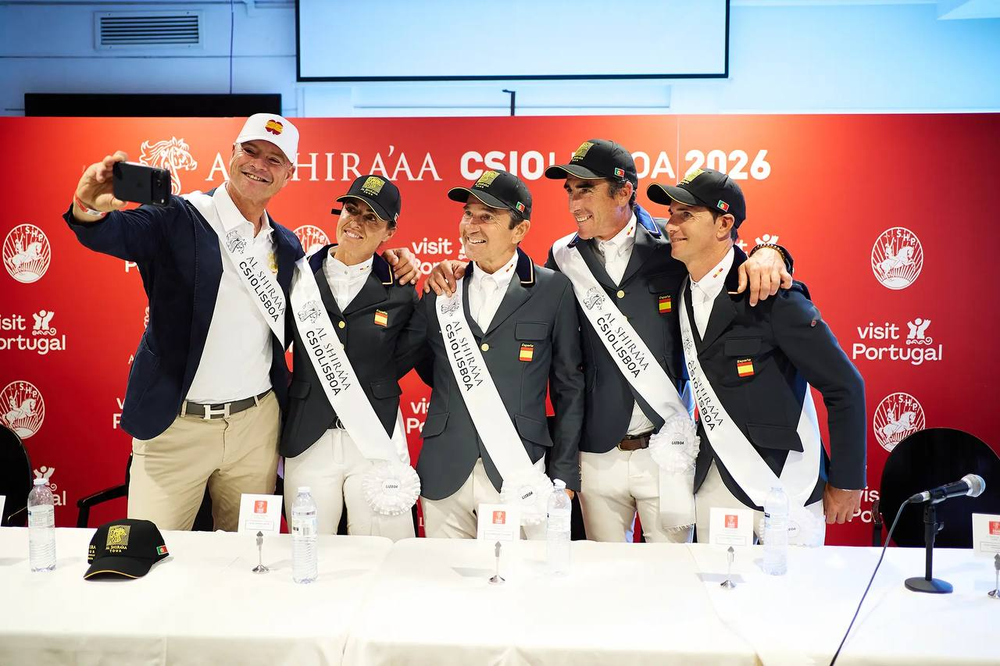

España gana la Copa de Naciones CSIO3* de Lisboa tras desempate con Sudáfrica
El equipo español se impuso en la Copa de Naciones del CSIO3* de Lisboa tras igualar con Sudáfrica en las dos rondas y desempatar por tiempo acumulado: 39,52 segundos frente a 43,10. Francia completó el podio con 8 puntos totales.

España conquistó la Copa de Naciones del CSIO3* de Lisboa tras un vibrante desempate contra Sudáfrica que se resolvió por tiempo acumulado. Ambos equipos finalizaron la primera ronda con 4 puntos, pero en la segunda ronda de desempate Sudáfrica sumó 4 puntos adicionales por un derribo, mientras que España completó sin penalizaciones. El conjunto español marcó un tiempo acumulado de 39,52 segundos frente a los 43,10 de Sudáfrica, lo que le valió la victoria incluso sin considerar la penalización del equipo africano. Francia cerró el podio con 8 puntos totales.
La actuación del equipo español fue sobresaliente, con cinco recorridos limpios de siete posibles, un balance que refleja la solidez y regularidad del conjunto. Entre los protagonistas destacaron Pilar Lucrecia Cordón con Actiongrace PS, Pello Elorduy Ibarzabal montando a Champenoise de Rampan, Kevin González de Zarate Fernández en silla de Djoural de Lizet y Jesús Garmendia Echevarria con Caramel Blue PS. La competición también contó con la presencia del reconocido jinete belga François Mathy Jr.
Por parte de Sudáfrica, destacaron Ronnie Healy con Callaho Connor, Charlie Bays a lomos de Ninety Stone Pullman y Alexandra Mairi Ruiz-Carter montando a Calvarole VG Z. El equipo sudafricano demostró un alto nivel durante toda la competición, aunque el derribo en el desempate y el factor tiempo resultaron determinantes en el desenlace final.
Este triunfo supone el decimocuarto título de España en la historia de la Copa de Naciones del CSIO Lisboa, consolidando su dominio histórico en la prueba. La última victoria española en este evento databa precisamente de 2026, año en el que también está prevista la celebración de la Copa de Naciones de Vejer de la Frontera.
La Copa de Naciones Cervezas Victoria del CSIO3* de Lisboa ratifica una vez más el excelente momento de forma del equipo español, que sigue demostrando su competitividad en el circuito internacional de salto de obstáculos.